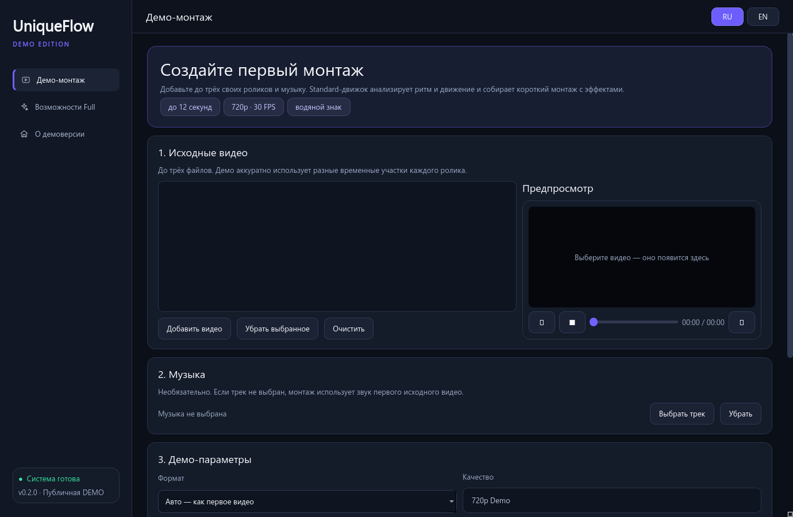
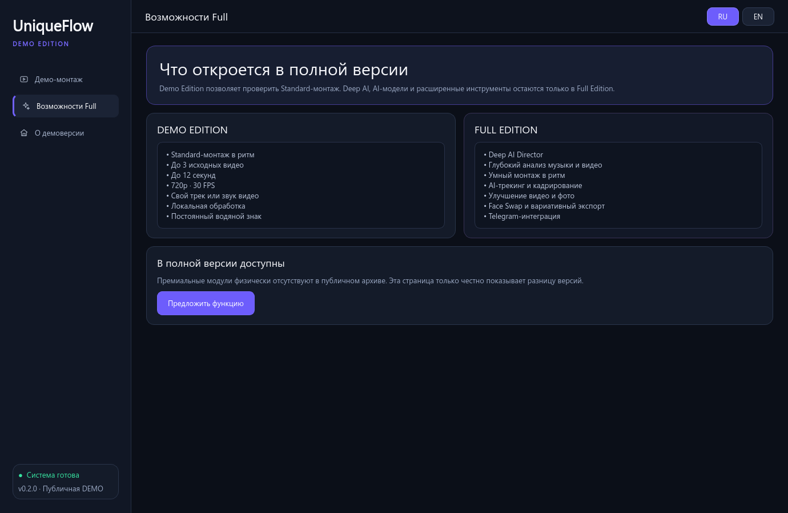

Монтаж с учётом музыки
Standard и Deep AI Director анализируют ритм, движение и сцены, чтобы собрать более осмысленный монтаж.
Бесплатная Full Beta для Windows · доступ ограничен по времени
Протестируйте полный рабочий процесс: добавьте видео и музыку, а Standard или Deep AI Director соберёт монтаж локально на вашем ПК.

Демонстрация продукта
Full Beta открывает реальный рабочий процесс: проверенный Standard, Deep AI Director и локальные инструменты улучшения доступны в одной устанавливаемой сборке.
Демонстрация продукта. Время обработки и результат зависят от исходников и компьютера.
Идея UniqueFlow
Импорт, просмотр, монтаж и экспорт коротких роликов в одном приложении.
Standard и Deep AI Director анализируют ритм, движение и сцены, чтобы собрать более осмысленный монтаж.
Трекинг и кадрирование помогают удерживать главного героя в вертикальной или горизонтальной композиции.
Улучшение видео, Photo AI и расширенные режимы экспорта доступны для тестирования.
Выбранные файлы обрабатываются на вашем компьютере. В этой сборке нет продуктовой аналитики и телеметрии.
Открыт Full Beta-тест
Без аккаунта и подписки на время бета-теста. Скачайте установщик для Windows и проверьте коммерческий RC-кандидат.
Кнопка создаст временную ссылку на закрытый файл Full Beta.
Установка выполняется для текущего пользователя Windows и не требует прав администратора.
Добавьте видео и музыку, выберите Standard или Deep AI и экспортируйте результат.
Версия · · Windows 10/11. Кнопка создаёт временную приватную ссылку на установщик.
SHA-256: 
Full Beta 0.9.0-rc1
Это не урезанная демонстрация. Face Swap пока отключён, пока проверяются права на распространение его моделей.
Вопросы
Full Beta — бесплатный релиз-кандидат. Доступ может закрыться после набора достаточного количества тестировщиков.
Да. Версия 0.9.0-rc1 бесплатна для личного тестирования, пока открыт набор. Это ещё не платный публичный релиз.
Нет. Видео, фото и музыка обрабатываются локально. Интернет используется только для запрошенных функций, например загрузки материалов или вашего Telegram-бота.
Бета пока не подписана цифровой подписью, поэтому SmartScreen может показать «Неизвестный издатель». Перед установкой сверяйте указанный SHA-256.
Примерно 902 МиБ. Установщик содержит среду выполнения и локальные модели обработки.
Используйте только свои материалы или контент, на который у вас есть разрешение. Программа не предназначена для нарушения приватности, авторских прав или правил площадок.
Напишите в Telegram @zloy_tomych или создайте Issue на GitHub.
Full Beta ограничена по времени
Доступ можно закрыть после набора текущей группы тестирования.